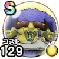

バッファロン
覚醒千里行ボーンナイト編バッファロン＆モヒカントのほこらこころ最大コスト+4スキルの体技ダメージ+10%ジバリア属性耐性+10%幻惑耐性+10% / 8.5点
くわしい特徴
【ランク特殊効果】 こころ最大コスト+4スキルの体技ダメージ+12%ジバリア属性耐性+10%幻惑耐性+20%モヒカントのこころS装備時ちから+30モヒカントのこころS装備時すばやさ+50こころ最大コスト+4スキルの体技ダメージ+10%ジバリア属性耐性+10%幻惑耐性+10%

覚醒千里行ボーンナイト編バッファロン＆モヒカントのほこらこころ最大コスト+4スキルの体技ダメージ+10%ジバリア属性耐性+10%幻惑耐性+10% / 8.5点
【ランク特殊効果】 こころ最大コスト+4スキルの体技ダメージ+12%ジバリア属性耐性+10%幻惑耐性+20%モヒカントのこころS装備時ちから+30モヒカントのこころS装備時すばやさ+50こころ最大コスト+4スキルの体技ダメージ+10%ジバリア属性耐性+10%幻惑耐性+10%